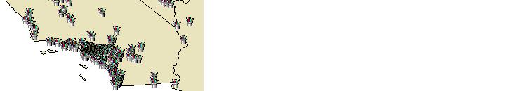

|
|||||||||||
| PREV CLASS NEXT CLASS | FRAMES NO FRAMES | ||||||||||
| SUMMARY: NESTED | FIELD | CONSTR | METHOD | DETAIL: FIELD | CONSTR | METHOD | ||||||||||
java.lang.Object
|
+--com.esri.mo2.map.draw.BaseSymbol
|
+--com.esri.mo2.map.draw.RasterMarkerSymbol
The RasterMarkerSymbol draws any image at the points or nodes of a given feature.
The symbol supports next attrites:
Antialiasing can be true or false, default is false.
Transparency is transparency from 0.0 to 1.0, default is 1.0
ImageString, UrlString set the full path or url to the image file.
The imageString has first priority.
SizeX, SizeY mean the width and widht(height), default value determines by image width(height).
HostSpotX, HotSpotY attributes assign the offset from the central of image. The positive values will shift to the left and down, the negavive values will shift to the right and up.
The next example shows how the RasterMarkerSymbol can be used.
RasterMarkerSymbol rmSymbol = new RasterMarkerSymbol();

rmSymbol.setAntialiasing(true);
rmSymbol.setTransparency(0.6);
rmSymbol.setImageString( "c:\temp\paint.gif" );
rmSymbol.setSizeX(16);
rmSymbol.setSizeY(16);
| Field Summary | |
static int |
DEFAULT_HOTSPOT_X
This constant defines the default X coordinate for "hotsport". |
static int |
DEFAULT_HOTSPOT_Y
This constant defines the default Y coordinate for "hotsport". |
static boolean |
DEFAULT_OVERLAP
This constant defines the default overlap value. |
static Color |
DEFAULT_SHADOW
This constant defines the default value for shadow color. |
static int |
DEFAULT_SIZE_X
This constant defines the default X size. |
static int |
DEFAULT_SIZE_Y
This constant defines the default Y size. |
static boolean |
DEFAULT_USECENTROID
This constant defines the default value for usecentroid. |
| Fields inherited from class com.esri.mo2.map.draw.BaseSymbol |
DEFAULT_ANTIALIASING, DEFAULT_TRANSPARENCY |
| Constructor Summary | |
RasterMarkerSymbol()
|
|
| Method Summary | |
Object |
clone()
The method returns object clone. |
void |
draw(FeatureGeometry g,
Graphics2D g2,
Object values)
This method draws the symbol in graphics context. |
int |
getHotSpotX()
Obtains the hotspot X coordinate. |
int |
getHotSpotY()
Obtains the hotspot Y coordinate. |
Image |
getImage()
Obtains the image object. |
String |
getImageString()
Obtains the name of image. |
Dimension |
getMaximumSymbolSize()
The method returns a Dimension of the symbol. |
boolean |
getOverlap()
Obtains the overlap value. |
Color |
getShadow()
Obtain the shadow color. |
int |
getSizeX()
Obtains the X size. |
int |
getSizeY()
Obtains the Y size. |
String |
getUrlString()
Obtains the Url string. |
boolean |
getUseCentroid()
Obtains the usecentroid value. |
void |
setHotSpotX(int hotspotx)
Sets the hotspot Y coordiante. |
void |
setHotSpotY(int hotspoty)
Sets the hotspot Y coordiante. |
void |
setImage(Image image)
Sets image This method has a high priority over the setUrlString and setImageString |
void |
setImageString(String imagestring)
Sets the name of image, format can be either GIF, JPEG or PNG. |
void |
setOverlap(boolean overlap)
Sets the overlap value. |
void |
setShadow(Color shadowcolor)
Sets the shadow color. |
void |
setSizeX(int size)
Sets the X size. |
void |
setSizeY(int size)
Sets the Y size. |
void |
setUrlString(String urlstring)
Sets Url string, format can be either GIF, JPEG or PNG. |
void |
setUseCentroid(boolean usecentroid)
Sets the usecentroid value. |
| Methods inherited from class com.esri.mo2.map.draw.BaseSymbol |
CalcCentroid, filterShadowImage, filterTransparentImage, getAntialiasing, getFieldCount, getFieldName, getRenderer, getTransparency, hasTransparency, setAntialiasing, setRenderer, setTransparency, switchTransform |
| Methods inherited from class java.lang.Object |
equals, finalize, getClass, hashCode, notify, notifyAll, toString, wait, wait, wait |
| Field Detail |
public static final boolean DEFAULT_OVERLAP
public static final int DEFAULT_SIZE_X
public static final int DEFAULT_SIZE_Y
public static final int DEFAULT_HOTSPOT_X
public static final int DEFAULT_HOTSPOT_Y
public static final Color DEFAULT_SHADOW
public static final boolean DEFAULT_USECENTROID
| Constructor Detail |
public RasterMarkerSymbol()
| Method Detail |
public Object clone()
clone in interface Symbolclone in class BaseSymbolSymbol.clone()
public void draw(FeatureGeometry g,
Graphics2D g2,
Object values)
g - the Geometryg2 - the graphics context for renderingvalues - the values of attribute fields, null == is ok and means no field valuesSymbol.draw(com.esri.mo2.cs.geom.FeatureGeometry, java.awt.Graphics2D, java.lang.Object)public void setOverlap(boolean overlap)
overlap - is the overlap valuepublic boolean getOverlap()
public void setSizeX(int size)
size - is a new image width in pixelpublic int getSizeX()
public void setSizeY(int size)
size - is a new image height in pixelpublic int getSizeY()
public void setHotSpotX(int hotspotx)
hotspotx - is a Y coordinatepublic int getHotSpotX()
public void setHotSpotY(int hotspoty)
hotspoty - is a Y coordinatepublic int getHotSpotY()
public void setShadow(Color shadowcolor)
shadowcolor - is color, can be nullpublic Color getShadow()
public void setImageString(String imagestring)
imagestring - path to the image can be nullpublic String getImageString()
public void setUrlString(String urlstring)
urlstring - path to the image can be nullpublic String getUrlString()
public void setImage(Image image)
image - is a regular imagepublic Image getImage()
public void setUseCentroid(boolean usecentroid)
usecentroid - is the usecentroid value.public boolean getUseCentroid()
public Dimension getMaximumSymbolSize()
getMaximumSymbolSize in class BaseSymbolRenderer.getMaximumSymbolSize()
|
|||||||||||
| PREV CLASS NEXT CLASS | FRAMES NO FRAMES | ||||||||||
| SUMMARY: NESTED | FIELD | CONSTR | METHOD | DETAIL: FIELD | CONSTR | METHOD | ||||||||||